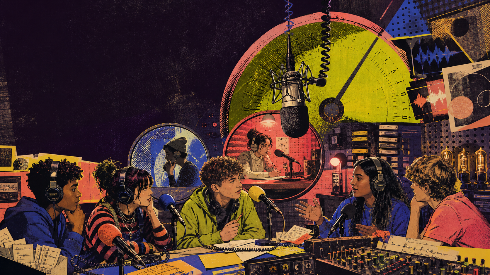
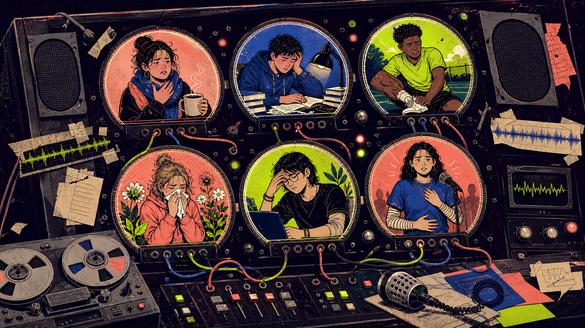

Frequency 103: The Body Broadcast
Medicine & Health — take the mic, decode what callers mean, ask sharper questions, and answer with care.
Tonight’s signal: clarity · empathy · fluency
Is everybody on frequency?
LIVE
On-air protocol: Ask one follow-up question. React naturally. Do not fix grammar while your partner is speaking.
What can you hear without sound?
SIGNALS

Scan
Who is speaking? Who is listening?
What studio objects can you name?
Tune in
Choose one person. What caller might be on the line?
Go live
Create the first 20 seconds of the broadcast.
Speak bravely. Listen carefully.
SPACE
Broadcast agreement
Classroom language practice only · not medical advice
Pass the symptom signal
20 SEC
A headache
Pain in your head
“I’ve got a terrible headache.”
Where does it hurt?
LABEL
Describe a location without naming the body part.
Point, guess, then ask: “What does it feel like?”
Add pain type, severity, and when it started.
Summarize: “So, your ___ has been ___ since ___.”
Make the key beat land
ECHO
/ˈhedeɪk/ — not “head-atch”
/ˈdɪzi/
/prɪˈskrɪpʃən/
/ɪɡˈzɔːstɪd/
Emotion echo
“I’m sorry you’re feeling like that. How long has it been bothering you?”
Say it as: rushed → bored → genuinely caring.
What changes: stress, pace, or intonation?
Build the caller’s opening line
SPEAK
1 · Symptom
2 · Time
3 · Extra detail
Explain without one-word answers
TOOLS
Ask, listen, then respond
DIAGNOSIS
LISTENING
RADAR
Choose a caller on the line
QUESTIONS

Select a caller
Describe only what you can observe. Then ask questions before making suggestions.
Six callers are waiting
EACH
What do you do when you feel tired but still have work?
Would you put this on air?
MYTH?
“Teenagers need only six hours of sleep.”
“We think this is…”
“Our main reason is…”
Another team asks one question.
A worried caller is on line one
PLAY 1
Caller
You have felt dizzy since lunch and nearly fell during sports practice.
You are worried about tomorrow’s match.
Reveal only when asked: You skipped breakfast, drank very little, and hit your head lightly yesterday.
Goal: explain clearly and ask what to do next.
Radio host
The show’s health professional is listening. You must collect clear information before handing over.
Ask about: start time, severity, other symptoms, what happened yesterday, and whether an adult knows.
Goal: summarize accurately and suggest a sensible next step.
The symptom nobody can see
PLAY 2
Anonymous caller
You have had stomachaches before presentations for three weeks.
Tests did not find a physical problem. You are embarrassed and afraid people will say it is “not real.”
Goal: explain the pattern and ask for support.
Guest health worker
Listen without judging. Ask about timing, school stress, sleep, and trusted adults.
Do not diagnose. Validate the physical feeling and suggest a safe support plan.
Goal: use two empathy phrases and summarize what you heard.
What should the host say next?
FIRST
“I’m mildly tired after one late night.”
Reporter summarizes. Two advisers ask questions. The editor chooses only after everyone speaks.
Spin the caller dial
SECONDS
Topic: tap the dial
On-air recipe
1. Caller explains the situation.
2. Host asks at least three questions.
3. Show empathy.
4. Suggest a sensible next step.
5. Caller adds one complication.
Three words are off-limits
STOP
Explain it without saying…
Your partner guesses the symptom. You may describe:
• location without the banned body word
• feeling
• possible situation
• what makes it better or worse
one point per successful explanation
Keep the signal clear
BROADCAST
Write the call slip
Symptoms, timeline, severity, and one hidden detail.
Assign the studio
Caller, host, concerned friend/relative, producer.
Go on air
Ask, clarify, empathize, summarize, choose a next step.
Signal twist
Halfway through, reveal the hidden detail and adapt.
Broadcast
90-second segment. Every person must speak naturally.
Monitor
Producers note one strong phrase and one missed question.
Success: clear symptoms · 4+ questions · empathy · summary · safe next step
Re-record the bad line
BETTER
Pairs have 15 seconds: repair the line and continue the conversation with one extra sentence.
Play it back. Improve the next take.
GROWTH
Replay one line
Quote one natural phrase your partner actually used.
Name the effect
“That worked because it sounded clear / caring / curious.”
Direct a retake
Give one precise instruction, then hear the speaker try again.
My speaking mix
Clear symptom description
Natural follow-up questions
Empathetic responses
Choose one slider to improve in the retake.
Your off-air assignment
HOME
🎙 Voice rehearsal
Record a 60–90 second fictional caller update. Include symptoms, timeline, severity, and what they tried.
🗂 Vocabulary
Create six mini-cards: word, simple definition, collocation, and one example.
✍ Radio script
Write a 10-line call-in conversation with at least four follow-up questions and two empathy phrases.
★ Optional challenge
Ask a trusted adult: “What helps people communicate well with health professionals?” Summarize their answer—no private details.
Next lesson
Past Continuous | Accidents & Funny Stories
Bring a harmless “everything went wrong” moment.
Sign-off
Final 20-second broadcast
Complete this aloud:
“The caller feels ___. It started ___. We learned ___. The safest next step is ___.”
Good communication is part of good care.